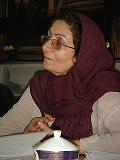

پذيرش > سایت نوشته ها > نابرابرى قدرت، عامل اصلى خشونت بر زنان
 گفتگو با شهلا اعزازى گفتگو با شهلا اعزازى

 نابرابرى قدرت، عامل اصلى خشونت بر زنان نابرابرى قدرت، عامل اصلى خشونت بر زنان
5 آذر 1385 - دویچهوله - نسخه قابل چاپ
روز بيست و پنجم نوامبر، برابر با چهارم آذر ماه به نام روز جهانى منع خشونت بر زنان نام گذارى شده است. درباره علل اصلى اعمال خشونت بر زنان و ابعاد آن خانم دكتر شهلا اعزازى، جامعه شناس و پژوهشگر مسائل زنان در گفتگوى كوتاهى با راديوى دويچه وله شركت كرده است:
دویچهوله: روز چهارم آذرماه از طرف سازمان ملل متحد روز منع خشونت بر زنان اعلام شده، شما بعنوان یک جامعه شناس ابعاد خشونت بر زنان چگونه ارزیابی میکنید؟
اعزازى: درباره ابعادخشونت بر زنان، با توجه به يك و يا دو طرح تحقيقی كه در اين مورد صورت گرفته، مى گويند در ۶۶ درصد خانواده هاى ايرانى خشونت وجود دارد كه اين البته اعتقاد من نیست. اینجا اما تفکیک بین انواع خشونتها نشده است. آنچه واضح است این است که ما آمار نداریم، نمیدانیم میزانش چقدر است. میشود حدس زد. تحقیقات مختلف دادههای مختلفى را ارائه میدهند، مىشود گفت كه تقریبا در ميان درصد بالايى از خانوادههای ما اصلا انجام خشونت بصورت یک موضوع طبیعی و عادی وجود دارد. بعضا خشونتهای سنگین است که احتمال دارد بعنوان خشونت مطرح و بیان بشوند.
دویچهوله: خانم دکتر اعزازى، آیا این ميزان بالاى خشونت، همه خشونتهاى خانگى است، يعنی عمدتا از طرف مردان خانواده، يعنى همسران یا برادران است علیه زنان و دختران انجام مى گيرد؟
اعزازى: نه! من داشتم به طرحی که تحت عنوان طرح ملی خشونت علیه زنان در ایران صورت گرفته استناد میکردم. در این طرح این رقمی که گفتم فقط خشونت بر زنان از جانب همسرانشان هست.
دویچهوله: شما در یکی از مقالههایتان اشاره کردهاید به اینکه نابرابری قدرت یکی از عوامل اصلی اعمال خشونت بر زنان است. منظور شما از این نابرابری قدرت چيست؟
اعزازى: وقتی ما رفتار کلی جامعه ایران را در نظر میگیریم میبینیم، از لحاظ قوانین، حالا اینها عمده تریناند که من اسم میبرم، از لحاظ قوانین، فرهنگ و آداب و رسوم و از لحاظ درآمدهای اقتصادی، پول و شغل، نابرابری میان زن و مرد در جهت دستیابی به امکانات اجتماعی وجود دارد. خب، بحث قدرت اصولا در رابطه با دسترسی به منابع کمیاب اجتماعی هست که حالا ثروت یکی از آنهاست و همینطور حمایتهای اجتماعی. قدرتی که مردان در جامعه دارند و روی زنان اعمال قدرت میکنند، تا حدودی آنها را از دستیابی به یکسری منابع اجتماعی دور نگه میدارد که بصورت معمول این را بصورت خشونت ساختاری مطرح میکنند. اما همین قدرت در خانواده باعث میشود مردان روی زنان نظارت اعمال کنند. بنابراین آنچه در خانواده خیلی از اوقات و یا اکثر اوقات، به خشونت میانجامد، رفتارهایی از زنان است که مردان آن را نمیپسندند و میخواهند بر روی رفتار زن، تحرکاتش، اقداماتی که میتواند بکند و بهرحال هر نوع فعالیت او اعمال قدرت و نظارت کنند. از آنطرف وقتی نگاه میکنید در قوانین خانواده میبینید که بعنوان رییس خانواده اصولا قدرت به او داده شده. این دو، یعنی ساختار جامعه و ساختار خانواده، باهم در ارتباط هستند. تا موقعی که ساختار جامعه قدرت را به مرد میدهد، همین قدرت در خانواده هم میتواند اعمال بشود و آنوقت زنان را وادار میکنند که رفتار مطابق میل آنها را انجام بدهد، حتا، اگر خودش موافق با آن نباشد.
دویچهوله: شما نقش سنت را در این ساختار قدرت در جامعه چطور ارزیابی میکنید؟
اعزازى: وقتی ساختار اجتماعی براساس قدرت مردان شکل گرفته، آنوقت با توجه به فرهنگهای مختلفی که وجود دارد، مردان میتوانند اعمال فشار بکنند و در مواردی اعمال فشار سنت حتا شدیدتر از قانون میتواند باشد. مثلا همین قتلهای ناموسی که در مناطقی از ایران صورت میگیرد که واقعا فشار آن فرهنگ گروهی افراد را وادار به انجام این کار میکند. در ایران از طریق قانونی هم هیچ منعی وجود ندارد و وقتی هیچ منعی وجود ندارد، رفتارهایی هم که زیر سلطهی سنت هستند، تشدید میشوند. یعنی وقتی فردی از طریق سنت دست به اقدامی خشونت آميز میزند، اگر قانون در جهت مجازات آن کار باشد، شاید این اقدامات کمتر بشوند. اما وقتی قانون هم هیچ کاری انجام نمیدهد، خب، طبیعتا آن رفتارهای سنتی بیشتر جا میافتند و جلو میروند. و برای مقابله با خشونت یکی از کارهایی که باید بکنیم این است، قوانین را در جهت تشدید مجازات عامل خشونت و حمایت از قربانیها برقرار كنيم. این اولین قدمیست که باید تغییر پیدا کند، اما تغییر قانونی اصلا به خودی خود کفایت نمیکند، بلکه مسئله مهم، حساس سازی جامعه به رفتار خشن و آگاهسازی افراد به حقوق خودشان است و باید همزمان با تغيير قانون و برای مدت بسیار طولانی ادامه پیدا يابد.
دویچهوله: شما به لزوم تغییر قوانین اشاره كرديد و اینکه تغییر قوانین میتواند کمکی باشند برای رشد و آگاهی جامعه نسبت به مخالفت با خشونت علیه زنان. از چندی پیش تعدادی از فعالان و گروههاى مدافع حقوق زنان در ایران کمپینی را برای جمع آورى يك ميليون امضاء در مخالفت با قوانین زنستیز در ایران براه انداختهاند. شما فکر میکنید، آیا جامعه در حال حاضر ظرفیت این تغییر را دارد؟
اعزازى: اینکه زنان موافق این تغییرات هستند و میخواهند نوع دیگری از قوانین بوجود بیاید، من فکر میکنم با توجه به آن امضاهایی که جمع شده و من کمابیش اطلاع دارم، پاسخ خیلی خوبی بوده است. كسانى كه عملا با اين قوانين درگیر میشوند، آنوقت میزان تبعیضاش را میبینند که چقدر زیاد هست و چگونه زنان در حاشیه نگهداشته شدهاند. تا الان با تغییر قوانین مخالفت شده، علتش را هم من نمیدانم و دلایل خاصی را ارائه میدهند. ولی وقتی ما تمام این قوانین را با قانون اساسی و با آن حقوقی که امروزه جوامع برای افراد در نظر میگیرند میسنجیم، میبینیم که باید تغییر پیدا کنند. چرا تغییر پیدا نمیکنند، نه به این علت که جامعه ظرفیت این تغییر را ندارد، بلکه به این علت است که برخى نمیخواهند این تغییرات صورت بگیرد.
دویچهوله: شما به مسئلهی آگاهی نسبت به ابعاد خشونت در خانواده اشاره كرديد و اینکه بعضی از زنها حتى رفتار خاصی از مرد را بعنوان خشونت ارزیابی نمیکنند. تا حدى كه گاهى گفته مىشود برخى مسئلهی حسادت را بعنوان نوعى نشان دادن عشق ارزیابی میکنند. چطور مىتوان آگاهی نسبت به رفتار خشونت آميز بوجود آورد؟
اعزازی: دادن آگاهی بر ضد خشونت اقدامیست که سازمانهای دولتی و البته غیر دولتی، یعنی مهمترین امکانی که سازمانهای دولتی دارند که میتوانند برضد خشونت بحث کنند و به همه بفهمانند که خشونت در مورد هیچکس نباید اعمال بشود، یکی مدارس است که در اثر آموزش مدرسهای عملا بچهها با راههای بدیل حل اختلاف و نه فقط راه خشونتآمیز حل اختلاف آشنا بشوند و درک کنند که هیچکس حق ندارد، حتا پدر و مادر آنها، بعنوان تربیت آنها را کتک بزند. یک امکان دیگری که بازهم در دسترس دولت است، تلویزیون هست و رسانههای دیگر به یقین، اما بخصوص تلویزیون است که اکثر مردم آن را تماشا میکنند. متاسفانه هیچکدام از این دو سازمان که خیلی میتوانند در این حوزه دخیل باشند، فعالیت خاصی انجام ندادهاند. اگر هم در موردش بحث میکنند، موضوع را برمیگردانند به ویژگیهای فردی فرد خشن. روزنامهها تا حدودی بیشتر به تحلیلهای اجتماعی در مورد خشونت پرداختهاند. باید مردم آگاه بشوند، باید مثلا اعلامیههایی به دیوار زده بشود، باید گفته بشود در صورت خشونت به کجا میتوانید مراجعه کنید، مددکاری باید قوی بشود، مشاوره باید قوی بشود. وقتی هیچکدام از اینها بصورت گسترده وجود ندارد، پس بازتابی هم در جامعه بوجود نمیآید. در نتیجه به نظر میرسد یا بعضی فکر میکنند مشکلی دارند، اما نه قانون تغییر پیدا کرده، نه حمایت از آنها میشود و نه جامعه خیلی پاسخ، بگوییم، مثبت میدهد به زنانی که بخاطر خشونت خانه و زندگی خود را رها میکنند. در نتیجه همه هنوز با آن جبر اجتماعی که فعلا در جامعه ما وجود دارد، مجبور به تحمل خشونتاند.
دویچهوله: خانم دکتر اعزازى با سپاس از شما.
ارسال به
بالاترین
،
توییتر
،
فریندفید
،
فیسبوک
در همين بخش :
 یک خبر تلخ؟ یک قانونشکنی؟ یک تصمیم بخشنامهای جدید؟ یک خبر تلخ؟ یک قانونشکنی؟ یک تصمیم بخشنامهای جدید؟
چرا بایست به سکسوالیته پرداخت؟ / نفیسه آزاد
آزارجنسی خانگی؛ «قربانی» نه، «نجات یافته»
زنان، بزرگترین بازندگان بهار عرب
سانسور از دیدگاه جنسیتی/الهه امانی
ديگر بخش ها :
طرح یک میلیون امضا
|
مقالات
|
سایت نوشته ها
|
اخبار
|
گزارش كمپين
|
گفت و گو
|
علیه سکوت
|
كوچه به كوچه
|
نامه های شما
|
گزارش ویژه
|
گفتگو با اعضا
|
ویژه سالگرد کمپین
|
تصویر برابری
|
دل آرام علی
|
تریبون
|
مقالات
|
تاریخ شفاهی
|
خارج از چارچوب
|
کتابخانه
|
درباره کمپین
|
کمپین در شهرها
|
کمپین در بند
|
صدای تغییر
|
ویژه 22 خرداد
|
لایحه حمایت از خانواده
|
گالری
|
عشا مومنی
|
امیر یعقوبعلی
|
خدیجه مقدم
|
راحله عسگری زاده و نسیم خسروی
|
پروین اردلان،جلوه جواهری، مریم حسین خواه، ناهید کشاورز
|
زینب پیغمبرزاده
|
سعیده امین، سارا ایمانیان، محبوبه حسین زاده، ناهید کشاورز و همایون نامی
|
احترام شادفر
|
نسیم سرابندی زاده،فاطمه دهدشتی
|
وبلاگ مهمان
|
پرونده خرم آباد
|
دستگیری ها
|
مریم مالک
|
پرستو اللهیاری
|
مهرنوش اعتمادی
|
سمیه رشیدی
|
Other Languages
|
همراهان
|
«فراخوان کمپین ده روز با بهاره هدایت»
| English
|